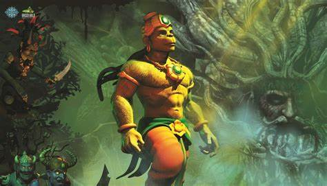

SHREE RAM The Ramayana text has several regional renderings, recensions, and sub-recensions. Textual scholar Robert P. Goldman differentiates two major regional revisions: the northern (n) and the southern (s). Scholar Romesh Chunder Dutt writes that "the Ramayana, like the Mahabharata, is a growth of centuries, but the main story is more distinctly the creation of one mind." A Times of India report dated 18 December 2015 informs about the discovery of a 6th-century manuscript of the Ramayana at the Asiatic Society library, Kolkata.[21] There has been discussion as to whether the first and the last volumes (Bala Kanda and Uttara Kanda) of Valmiki's Ramayana were composed by the original author. The uttarākāṇḍa, the bālakāṇḍa, although frequently counted among the main ones, is not a part of the original epic. Though Balakanda is sometimes considered in the main epic, according to many Uttarakanda is certainly a later interpolation and thus is not attributed to the work of Maharshi Valmiki.[7] This fact is reaffirmed by the absence of these two Kāndas in the oldest manuscript.[21] Many Hindus don't believe they are integral parts of the scripture because of some style differences and narrative contradictions between these two volumes and the rest.[22]
LORD HANUMAN The meaning or origin of the word "Hanuman" is unclear. In the Hindu pantheon, deities typically have many synonymous names, each based on some noble characteristic, attribute, or reminder of a mythical deed achieved by that deity.[21] One interpretation of "Hanuman" is "one having a disfigured jaw". This version is supported by a Puranic legend wherein infant Hanuman mistakes the Sun for a fruit, heroically attempts to reach it, and is wounded in the jaw for his attempt by Indra the King of Gods.[21] Hanuman combines two of the most cherished traits in the Hindu bhakti-shakti worship traditions: "heroic, strong, assertive excellence" and "loving, emotional devotion to personal God".[21] Linguistic variations of "Hanuman" include Hanumat, Anuman (Tamil), Hanumantha (Kannada), Hanumanthudu (Telugu). Other names include: Anjaneya,[22] Anjaniputra (Kannada), Anjaneyar (Tamil), Anjaneyudu (Telugu), Anjanisuta all meaning "the son of Anjana" Kesari Nandana or Kesarisuta, based on his father, which means "son of Kesari" Vayuputra/ Pavanputra : the son of the Vayu deva- Wind god[23] Vajrang Bali/Bajrang Bali, "the strong one (bali), who had limbs (anga) as hard or as tough as vajra (diamond)"; this name is widely used in rural North India[21]
1. Please click here go to image Shree Ram